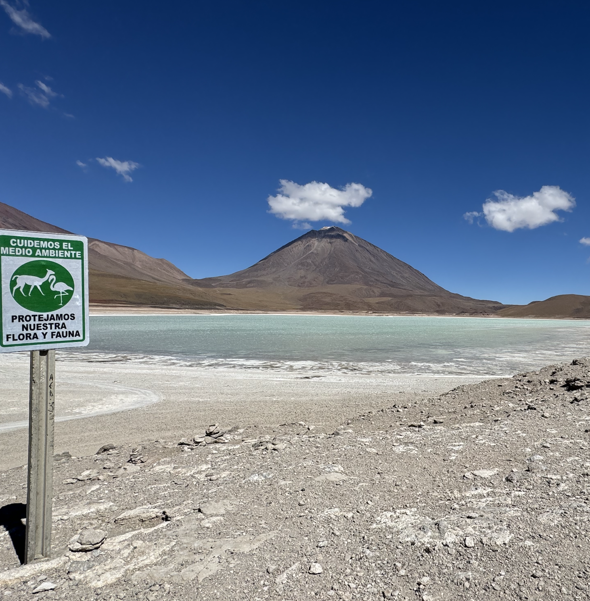
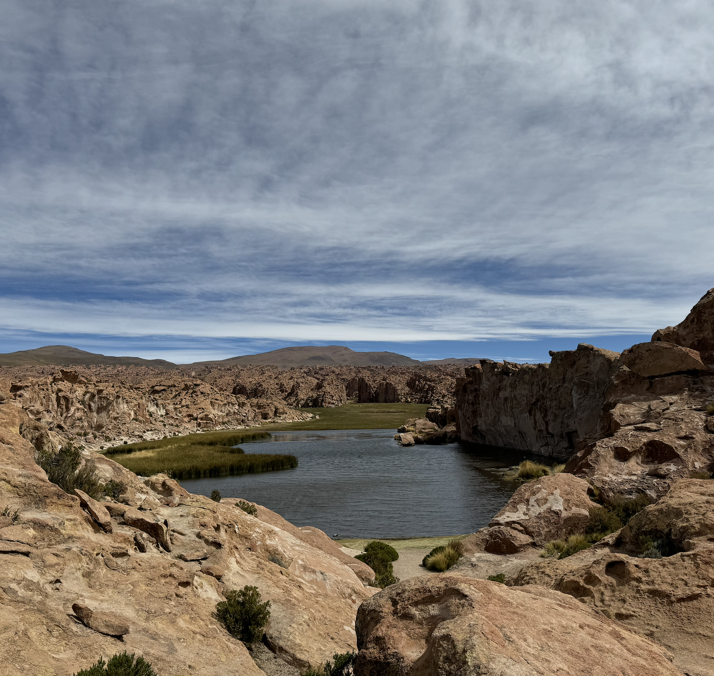
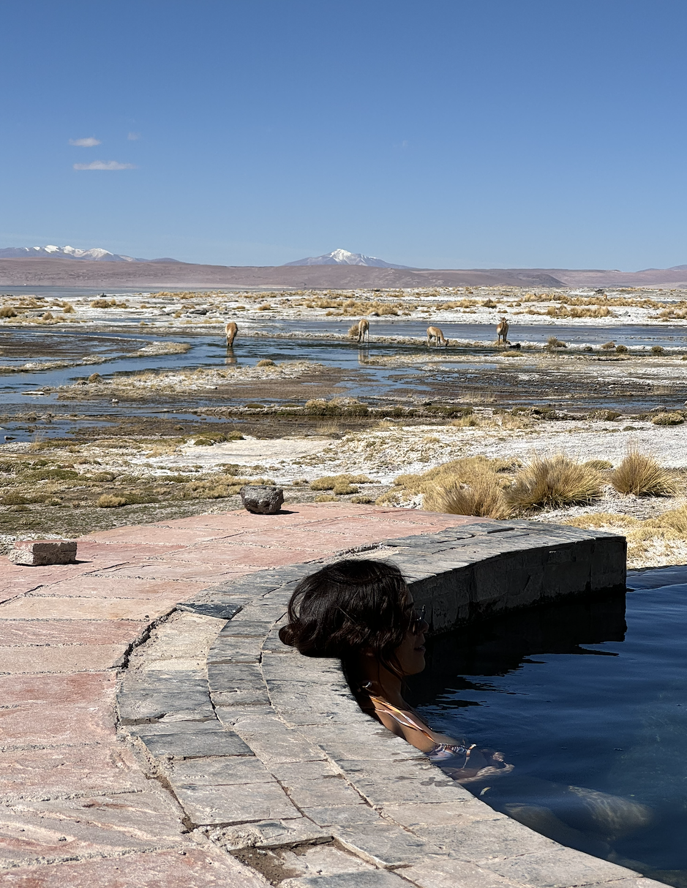
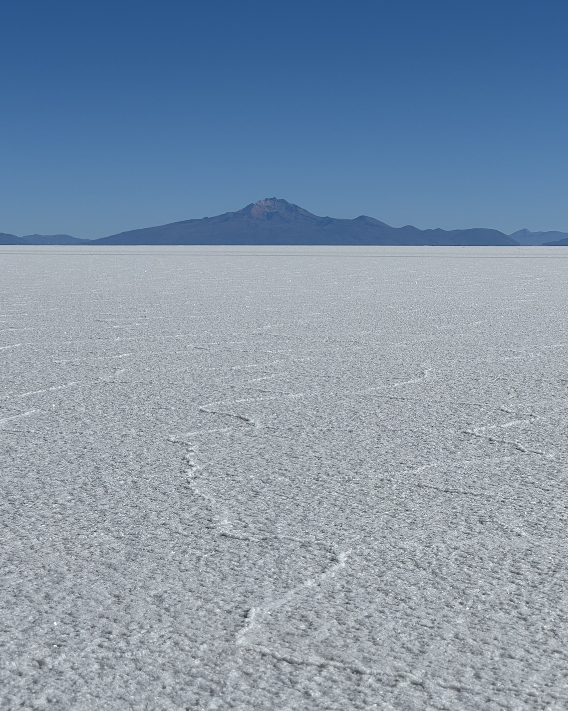

Bolivia brilla con su inigualable riqueza natural y cultural. Desde los picos nevados de los Andes hasta la inmensidad del Salar de Uyuni, donde el cielo y la tierra se fusionan en un espectáculo surrealista, este país es un paraíso para los viajeros. Su gente, orgullosa de sus raíces indígenas, mantiene vivas tradiciones ancestrales reflejadas en su música, vestimenta y festividades. Bolivia no es solo un destino, es una experiencia que despierta los sentidos y deja una huella imborrable en el alma.



